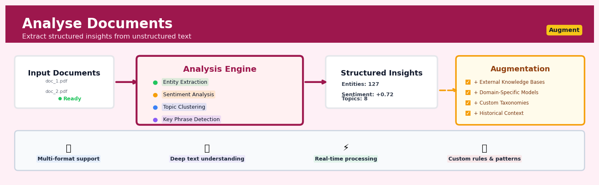

Analyse Documents#


The biggest mistake I see teams make with document analysis is treating augmentation as an afterthought instead of a design principle. Your base NLP models will miss domain-specific jargon, historical context, and organizational nuance every single time unless you proactively enrich them with curated knowledge bases and custom entity dictionaries. Start building your augmentation layer on day one, not after your stakeholders complain about accuracy six months in.
The 60-Second Version#
What it does: Analyse Documents automatically reads and extracts structured information from unstructured text—like contracts, reports, emails, or invoices—so you don’t have to.
When to use it: You’re drowning in documents that need to be read, categorised, summarised, or searched, and manual processing is too slow or expensive.
What you get back: Structured data you can sort, filter, and analyse—extracted facts, classifications, summaries, or answers to specific questions—plus the ability to find insights across thousands of documents instantly.
At a Glance
Difficulty |
Moderate |
Typical runtime |
Seconds per document; minutes for thousands |
What you bring |
Text documents in any common format (PDF, Word, email, etc.) |
What you get |
Extracted data, classifications, summaries, or question answers in structured form |
Heuristix bucket |
Augment — AI & Language Intelligence |
The output quality depends entirely on how clearly you define what you want extracted—vague instructions produce vague results.
Learning Objectives#
After reading this chapter, a business user will be able to:
Identify which document processing tasks—such as contract review, invoice extraction, or compliance screening—can be automated using Analyse Documents versus when manual review remains necessary.
Interpret extraction outputs, confidence scores, and entity relationships to assess whether automated results are reliable enough for downstream business decisions.
Decide when to implement full automation, human-in-the-loop validation, or traditional manual processing based on document volume, complexity, and error tolerance in your specific context.
After reading this chapter, a data scientist will be able to:
Implement an end-to-end document analysis pipeline using retrieval-augmented generation (RAG), including document chunking, embedding selection, and prompt engineering for extraction tasks.
Tune chunk size, overlap parameters, retrieval methods, and model temperature settings while understanding their impact on extraction accuracy, context preservation, and computational cost.
Validate extraction quality through precision-recall metrics, spot-check problematic document types, and diagnose failures caused by poor OCR, ambiguous layouts, or hallucinated content.
Overview#
Analyse Documents is a natural language processing (NLP) capability that transforms unstructured text documents into structured, actionable intelligence through automated extraction, classification, summarisation, and semantic analysis. At its core, this technique leverages large language models (LLMs) and transformer-based architectures to comprehend document content, identify key entities and relationships, answer questions, and generate derived insights without requiring manual reading or rule-based parsing. It belongs to the family of document intelligence methods, encompassing information extraction, text classification, question answering, and retrieval-augmented generation (RAG), unified under a single analytical framework for enterprise document processing.
When to Use This#
Use this when:
Processing large volumes of unstructured business documents — You have contracts, reports, emails, or regulatory filings that exceed human reading capacity, and you need to extract specific information at scale without manual review.
Standardising information extraction across document types — Your organisation receives invoices, claims, or applications in varying formats, and you need consistent structured output regardless of source document layout or language variations.
Answering ad-hoc questions about document collections — Business users need to query a corpus of documents (e.g., “What are our contractual obligations regarding data retention?”) without knowing which specific documents contain the answer.
Summarising lengthy documents for executive review — You need to distil 50-page technical reports, legal agreements, or research papers into digestible summaries while preserving critical information.
Classifying documents by topic, sentiment, or intent — Incoming customer correspondence, support tickets, or regulatory submissions need automatic routing or tagging based on content rather than metadata.
Extracting entities and relationships from narrative text — You need to identify people, organisations, monetary amounts, dates, or custom domain-specific entities (e.g., drug names, product codes) and their relationships.
Comparing documents for consistency or changes — Contract amendments, policy updates, or versioned specifications need systematic comparison to identify material differences.
Do NOT use this when:
Documents are already structured — If your data exists in well-formed databases, spreadsheets, or APIs, traditional data processing is more efficient and deterministic than NLP-based extraction.
Perfect accuracy is legally or safety-critical — When extraction errors carry unacceptable consequences (e.g., medical dosage extraction for automated administration), human-in-the-loop validation is mandatory regardless of model confidence.
Document volume is trivially small — For fewer than 10-20 documents, manual review is often faster than configuring and validating an automated pipeline.
Questions This Answers#
Understanding What’s Inside Our Documents#
What are the main complaints and issues customers are raising in the 50,000 support tickets we received last quarter?
Which contracts in our portfolio contain auto-renewal clauses, and when do they expire?
What risks and liabilities are mentioned across all our vendor agreements, and which ones require immediate attention?
Can you summarise the key findings from the 200 research reports our analysts published this year so our executive team can review them in one hour instead of one week?
Which regulatory requirements appear most frequently in our compliance documentation, and are we meeting them?
Making Decisions from Document Insights#
Should we approve this vendor contract, or does it contain terms that conflict with our standard policies?
Which customer feedback themes from product reviews should influence our Q3 roadmap priorities?
Based on the proposals we’ve received, which three suppliers offer the best terms for our procurement needs?
Are the claims in these insurance applications consistent with our risk acceptance criteria, or should they be flagged for manual review?
What topics and concerns are emerging in employee survey responses that we need to address in the next town hall?
Extracting Specific Intelligence at Scale#
How many invoices from the past six months are missing purchase order numbers, and which vendors are repeat offenders?
Which patents filed by our competitors in the last 18 months overlap with our current technology development areas?
What are the settlement amounts, dates, and terms across all the legal cases mentioned in our litigation files?
Can you identify every instance where our brand or products are mentioned in these 500 news articles and tell me whether the sentiment is positive or negative?
How It Works#
Imagine you’re a new executive inheriting 500 banker’s boxes full of contracts, emails, reports, and memos from a just-acquired company. You need to know: which contracts expire this year? Which customers complained about delivery delays? What risks did the auditors flag? A traditional approach means hiring a team of paralegals to read every page, highlight key facts, and fill out spreadsheets—weeks of tedious work. Analyse Documents works like giving that entire archive to a speed-reading assistant who already knows what contracts, complaints, and risks look like, can instantly locate relevant passages, extract the critical details, and hand you back a clean summary table in minutes instead of months.
UNSTRUCTURED DOCUMENTS ANALYSE DOCUMENTS STRUCTURED OUTPUT
┌─────────────────────┐ ┌──────────────────────┐
│ Contract_Final.pdf │ │ Entity │ Value │
│ "Party A agrees to │──┐ ├─────────┼────────────┤
│ deliver by March │ │ │Customer │ Acme Corp │
│ 2024..." │ │ ┌──────────────┐ │Deadline │ March 2024 │
└─────────────────────┘ ├────────→│ LLM Model │──────────────→│Amount │ $2.4M │
│ │ reads text │ │Risk │ High │
┌─────────────────────┐ │ │ extracts │ └──────────────────────┘
│ Email thread re: │ │ │ classifies │
│ delivery issues, │──┤ │ summarizes │ ┌──────────────────────┐
│ customer upset... │ │ └──────────────┘ │ Summary Report: │
└─────────────────────┘ │ │ "3 contracts expire │
│ │ Q1 2024. 2 customers│
┌─────────────────────┐ │ │ flagged delays." │
│ Audit_Notes.docx │──┘ └──────────────────────┘
│ "Identified material│
│ weakness in..." │
└─────────────────────┘
1. Ingest the document
The system receives your document—a PDF contract, a Word memo, a scanned image—and converts it into plain text. For images or scans, optical character recognition (OCR) runs first to turn pixels into readable words. The text is now ready for analysis.
2. Break into chunks
Long documents get divided into manageable pieces, typically a few paragraphs each. This chunking ensures the language model can process everything efficiently without losing context, like reading a book chapter by chapter instead of trying to absorb it in one glance.
3. Feed chunks to the language model
Each chunk passes through a large language model—a neural network trained on billions of pages of text—that understands language patterns, recognizes entity types (dates, names, amounts), and comprehends semantic meaning. The model “reads” each chunk and builds an internal representation of what it means.
4. Extract and classify
The model identifies and pulls out specific information you’ve requested: contract parties, dates, financial figures, sentiment, topics. It simultaneously classifies the document (is this a complaint? a contract? an invoice?) and tags sections by theme.
5. Answer questions or summarize
If you’ve posed specific questions (“What are the payment terms?” “Who raised concerns?”), the model scans its understanding of the document to locate relevant passages and formulates direct answers. For summarization, it distills the main points into a concise overview.
6. Output structured data
Finally, the system returns everything in a structured format—a table, JSON, or database entries—ready for dashboards, reports, or further analysis. What started as unreadable prose is now sortable, searchable, actionable data.
The key insight: Language models work because they’ve learned the statistical patterns of how humans use words to convey meaning, enabling them to “understand” documents the way a human reader would—but at machine speed and scale.
The Intuition#
Imagine you have hired a highly intelligent research assistant who has read millions of documents across every conceivable domain — legal contracts, medical records, financial statements, scientific papers, and casual correspondence. This assistant does not memorise documents verbatim but instead develops a deep understanding of how language works: what words mean in different contexts, how sentences relate to each other, and how information is typically organised in different document types. When you hand this assistant a new document and ask “What is the termination clause?”, they do not search for the literal phrase but instead understand what you are asking and locate the relevant passage based on meaning.
The Analyse Documents capability works precisely this way. Large language models are trained on vast text corpora, learning statistical patterns that capture semantic relationships between words, phrases, and concepts. When processing your documents, the model encodes text into high-dimensional vector representations where semantically similar content occupies nearby regions of the space. A question about “contract termination” and a clause discussing “agreement cancellation” will map to similar vectors, enabling the system to find relevant content even when exact keyword matches fail. This is fundamentally different from traditional search or rule-based extraction, which requires anticipating every possible way information might be expressed.
The power of modern document analysis comes from the transformer architecture’s attention mechanism, which allows the model to consider relationships between all parts of a document simultaneously rather than processing text sequentially. When extracting an entity like “effective date” from a contract, the model attends to contextual signals throughout the document — section headings, surrounding sentences, typical placement patterns — to disambiguate which date among potentially dozens is the one being requested. This contextual reasoning is what enables generalisation across document formats, languages, and domains without format-specific programming.
The Mathematics#
Transformer Architecture Fundamentals#
Document analysis in Heuristix is powered by transformer-based language models. We formalise the key mathematical components.
Notation and Setup
Let a document \(D\) consist of a sequence of \(n\) tokens: \(D = (x_1, x_2, \ldots, x_n)\) where each \(x_i \in \mathcal{V}\) for vocabulary \(\mathcal{V}\) with \(|\mathcal{V}| = V\). Each token is embedded into a \(d\)-dimensional vector space via an embedding matrix \(\mathbf{E} \in \mathbb{R}^{V \times d}\):
where \(\mathbf{p}_i \in \mathbb{R}^d\) encodes positional information.
Self-Attention Mechanism
The core operation is scaled dot-product attention. Given input representations \(\mathbf{H}^{(l-1)} = [\mathbf{h}_1^{(l-1)}, \ldots, \mathbf{h}_n^{(l-1)}]^\top \in \mathbb{R}^{n \times d}\) at layer \(l-1\), we compute queries, keys, and values:
where \(\mathbf{W}^Q, \mathbf{W}^K, \mathbf{W}^V \in \mathbb{R}^{d \times d_k}\) are learned projection matrices. The attention output is:
The scaling factor \(\sqrt{d_k}\) prevents the dot products from growing too large in magnitude, which would push softmax into regions with extremely small gradients.
Multi-Head Attention
Rather than performing a single attention function, the model uses \(h\) parallel attention heads:
where \(\text{head}_i = \text{Attention}(\mathbf{H}\mathbf{W}_i^Q, \mathbf{H}\mathbf{W}_i^K, \mathbf{H}\mathbf{W}_i^V)\) and \(\mathbf{W}^O \in \mathbb{R}^{hd_k \times d}\).
Semantic Similarity and Retrieval#
For question-answering over documents, we employ dense retrieval. Given a query \(q\) and document passages \(\{p_1, \ldots, p_m\}\), we compute embeddings via encoder \(f_\theta\):
Relevance is measured by cosine similarity:
The top-\(k\) passages are retrieved as context for generation:
Named Entity Recognition#
Entity extraction is formalised as sequence labelling. For input tokens \((x_1, \ldots, x_n)\), we predict labels \((y_1, \ldots, y_n)\) where \(y_i \in \mathcal{T}\) (e.g., BIO tags). Using a linear layer over transformer outputs:
For structured entity extraction with dependencies, a Conditional Random Field (CRF) layer models transition probabilities:
where \(\phi(y_{i-1}, y_i, \mathbf{h}_i) = \mathbf{A}_{y_{i-1}, y_i} + \mathbf{W}_{y_i}\mathbf{h}_i\) includes transition matrix \(\mathbf{A}\).
Text Classification#
For document classification into \(C\) classes, we use the [CLS] token representation:
The cross-entropy loss for training is:
Assumptions and Limitations#
Tokenisation coverage: The model assumes input text can be adequately represented by the tokeniser’s vocabulary. Out-of-vocabulary terms (rare proper nouns, domain jargon) are decomposed into subword units, potentially losing semantic precision.
Context length constraints: Transformer attention is \(O(n^2)\) in sequence length. Most models have fixed maximum context windows (e.g., 4,096 or 8,192 tokens), requiring document chunking strategies.
Independence of chunks: When documents exceed context limits, chunks are typically processed independently. Cross-chunk dependencies (e.g., a pronoun in chunk 3 referring to an entity in chunk 1) require explicit coreference resolution.
Distributional hypothesis: The model assumes meaning derives from usage patterns in training data. Concepts absent from or underrepresented in training corpora will not be reliably understood.
Understanding the Mathematics#
Token Embeddings and Positional Encoding#
The equation:
Read it aloud:
The representation of token i equals the embedding vector looked up for word w at position i, plus the positional encoding for position i.
What each symbol means:
\(\mathbf{x}_i\) = the final vector representation of the token at position i
\(\mathbf{E}[w_i]\) = the embedding vector for the specific word token w at position i
\(\mathbf{PE}(i)\) = the positional encoding that captures where in the sequence this token appears
\(+\) = element-wise addition of two vectors
A concrete numerical example:
Suppose we’re processing the contract phrase “payment due date.” The word “due” appears at position 2. Its embedding vector might be [0.2, 0.8, 0.3] (simplified to 3 dimensions). The positional encoding for position 2 is [0.1, 0.0, 0.2]. The final representation becomes [0.2 + 0.1, 0.8 + 0.0, 0.3 + 0.2] = [0.3, 0.8, 0.5]. This combined vector now encodes both what the word means and where it sits in the contract clause.
Why this equation matters:
Without positional encoding, “Payment due by Friday” and “Friday payment due” would be mathematically identical, destroying the meaning that contract dates depend on word order.
Self-Attention Score Calculation#
The equation:
Read it aloud:
The attention output equals the softmax of the query-key dot products divided by the square root of the key dimension, then multiplied by the values.
What each symbol means:
\(\mathbf{Q}\) = query matrix (what each token is asking about)
\(\mathbf{K}\) = key matrix (what each token can be searched for)
\(\mathbf{V}\) = value matrix (the actual content each token contributes)
\(\mathbf{K}^T\) = transpose of the key matrix
\(d_k\) = dimensionality of the key vectors
\(\text{softmax}()\) = function that converts scores to probabilities summing to 1
A concrete numerical example:
Analyzing an invoice, the model encounters “the amount \(5,000 referenced in Section 3.2." For the token "\)5,000,” the query-key product with “Section” yields a raw score of 48. With \(d_k = 64\), we divide: \(48/\sqrt{64} = 48/8 = 6.0\). After softmax across all tokens, “Section” gets attention weight 0.7, “amount” gets 0.2, others get 0.1. The model then weighs the value vectors: \(0.7 \times \mathbf{V}_{\text{Section}} + 0.2 \times \mathbf{V}_{\text{amount}} + ...\), producing a representation that strongly emphasizes the contractual reference.
Why this equation matters:
Self-attention enables the model to automatically find which distant words in a 50-page contract are relevant to each entity, eliminating the need for hand-coded rules about document structure.
Cross-Entropy Loss for Classification#
The equation:
Read it aloud:
The loss equals negative one times the sum, across all classes, of the true label multiplied by the log of the predicted probability.
What each symbol means:
\(\mathcal{L}\) = the loss value we’re trying to minimize
\(C\) = total number of document classes
\(y_i\) = true label (1 if document belongs to class i, 0 otherwise)
\(\hat{y}_i\) = model’s predicted probability that document belongs to class i
\(\log()\) = natural logarithm
A concrete numerical example:
A document is truly a “Purchase Order” (class 2). The true labels are \([0, 1, 0, 0]\) for four classes. The model predicts \([0.1, 0.7, 0.15, 0.05]\). The loss becomes \(-(0 \times \log(0.1) + 1 \times \log(0.7) + 0 \times \log(0.15) + 0 \times \log(0.05)) = -\log(0.7) = 0.357\). If the model had predicted 0.9 for the correct class instead, the loss would drop to \(-\log(0.9) = 0.105\)—training drives this number toward zero.
Why this equation matters:
Cross-entropy heavily penalizes confident wrong predictions, forcing the document classifier to learn subtle distinctions between invoice types rather than guessing randomly.
The Big Picture#
The mathematics of document analysis fundamentally transforms sequences of text tokens into structured knowledge by learning contextualized representations. Where traditional approaches relied on brittle pattern matching, transformer architectures use self-attention to dynamically compute which parts of a document matter for understanding each element—a contract date depends on nearby legal language, not just the numbers themselves. This approach succeeds because attention mechanisms scale to arbitrarily long dependencies (unlike recurrent networks that forget) while remaining parallelizable for efficiency. In essence: the math teaches machines to read like humans do, focusing attention on relevant context rather than processing words in isolation.
Python Implementation#
"""
Document Analysis Implementation
Demonstrates key document intelligence operations using modern NLP libraries.
"""
import numpy as np
import pandas as pd
from typing import List, Dict, Any
from dataclasses import dataclass
# For transformer-based models
from transformers import (
pipeline,
AutoTokenizer,
AutoModelForSequenceClassification,
AutoModelForQuestionAnswering
)
from sentence_transformers import SentenceTransformer
from sklearn.metrics.pairwise import cosine_similarity
# Sample documents for demonstration
SAMPLE_DOCUMENTS = [
{
"id": "DOC001",
"title": "Service Agreement - Acme Corp",
"content": """SERVICE AGREEMENT
This Service Agreement ("Agreement") is entered into as of January 15, 2024
("Effective Date") by and between Acme Corporation, a Delaware corporation
("Provider") and Beta Industries LLC ("Client").
1. SERVICES
Provider shall deliver data analytics consulting services as described in
Exhibit A. The initial term shall be twelve (12) months from the Effective Date.
2. COMPENSATION
Client agrees to pay Provider a monthly fee of $50,000 USD, due within 30 days
of invoice receipt. Late payments shall accrue interest at 1.5% per month.
3. TERMINATION
Either party may terminate this Agreement with 60 days written notice. Upon
termination, Client shall pay all fees for services rendered through the
termination date.
4. CONFIDENTIALITY
Both parties agree to maintain confidentiality of all proprietary information
for a period of three (3) years following termination."""
},
{
"id": "DOC002",
"title": "Customer Support Ticket #4521",
"content": """From: john.smith@example.com
Subject: Urgent - System outage affecting production
We have been experiencing complete system unavailability since 3:45 PM EST today.
Our entire operations team is unable to access the platform. This is critically
impacting our ability to process customer orders. We estimate losses of approximately
$10,000 per hour of downtime. Please escalate immediately and provide an ETA for
resolution. Our account manager is Sarah Johnson and our contract includes 99.9%
uptime SLA with penalties for breaches."""
}
]
@dataclass
class ExtractionResult:
"""Container for document extraction results."""
document_id: str
entities: List[Dict[str, Any]]
classifications: Dict[str, float]
summary: str
qa_results: List[Dict[str, str]]
def chunk_document(text: str, chunk_size: int = 500, overlap: int = 50) -> List[str]:
"""
Split document into overlapping chunks for processing.
Args:
text: Input document text
chunk_size: Maximum characters per chunk
overlap: Character overlap between consecutive chunks
Returns:
List of text chunks
"""
chunks = []
start = 0
while start < len(text):
end = start + chunk_size
# Try to break at sentence boundary
if end < len(text):
# Look for sentence-ending punctuation
for punct in ['. ', '.\n', '! ', '? ']:
last_punct = text[start:end].rfind(punct)
if last_punct > chunk_size * 0.5: # Only if we're past halfway
end = start + last_punct + len(punct)
break
chunks.append(text[start:end].strip())
start = end - overlap
return chunks
def extract_entities(text: str, model_name: str = "dslim/bert-base-NER") -> List[Dict]:
"""
Extract named entities from document text.
Args:
text: Input text
model_name: HuggingFace model identifier
Returns:
List of entity dictionaries with type, text, and confidence
"""
# Initialize NER pipeline
ner_pipeline = pipeline(
"ner",
model=model_name,
aggregation_strategy="simple" # Merge subword tokens
)
# Process in chunks if text is long
chunks = chunk_document(text, chunk_size=450)
all_entities = []
for chunk_idx, chunk in enumerate(chunks):
entities = ner_pipeline(chunk)
for entity in entities:
all_entities.append({
"entity_type": entity["entity_group"],
"text": entity["word"],
"confidence": round(entity["score"], 4),
"chunk_index": chunk_idx,
"start": entity["start"],
"end": entity["end"]
})
# Deduplicate entities appearing in overlapping regions
seen = set()
unique_entities = []
for ent in all_entities:
key = (ent["entity_type"], ent["text"].lower())
if key not in seen:
seen.add(key)
unique_entities.append(ent)
return unique_entities
def classify_document(
text: str,
candidate_labels: List[str]
) -> Dict[str, float]:
"""
Zero-shot document classification.
Args:
text: Document text to classify
candidate_labels: List of possible classification labels
Returns:
Dictionary
## Visualisations


## Using This in Heuristix
### What You'll Need
The Analyse Documents node expects a dataset with at least one text column containing your document content. This could be anything from customer emails and support tickets to legal contracts or product reviews.
**Example input:**
| document_id | text_content | document_type |
|-------------|--------------|---------------|
| 001 | "Customer complained about late delivery..." | email |
| 002 | "This product exceeded my expectations..." | review |
The `text_content` column is what the node will process. Additional columns like IDs or metadata will pass through unchanged, which is helpful for tracking and joining results later.
### Configuration Parameters
| Parameter | What It Does | Default | When to Change It |
|-----------|--------------|---------|-------------------|
| **Text Column** | Which column contains the document text to analyse | (first text column) | Select the correct column if you have multiple text fields |
| **Analysis Type** | What you want to extract: entities, sentiment, topics, summaries, or custom questions | Extract Entities | Choose "Custom Questions" when you need specific information; "Summarise" for condensing long documents |
| **Custom Prompt** | Your specific instruction or question about the documents | (empty) | Required when Analysis Type is "Custom Questions". Be specific: "What is the refund amount requested?" works better than "Find money" |
| **Model** | Which LLM to use | GPT-4o-mini | Use GPT-4o for complex analysis requiring deeper reasoning; stick with mini for cost efficiency on straightforward tasks |
| **Output Column Name** | What to call the new column with results | analysis_result | Change to something descriptive like "extracted_dates" or "sentiment_score" for clarity |
| **Batch Size** | How many documents to process simultaneously | 10 | Increase to 50+ for faster processing of simple tasks; decrease to 1-5 for very long documents |
### What You'll Get Back
The node adds a new column (named per your Output Column Name parameter) containing the analysis results. The format depends on your Analysis Type:
- **Extract Entities**: Structured JSON with people, organizations, dates, locations
- **Sentiment**: Positive/Negative/Neutral labels, often with confidence scores
- **Summarise**: A concise paragraph capturing key points
- **Custom Questions**: Direct answers to your prompt
You'll also see a **results panel** showing processing status, token usage, and any documents that failed to process. For sentiment analysis, you'll get a **distribution chart** showing the breakdown across your dataset.
### Quick Start: Extracting Key Information from Support Tickets
1. **Connect your data** containing customer support tickets with a text column
2. **Drag the Analyse Documents node** onto your canvas and connect it
3. **Set Analysis Type** to "Custom Questions"
4. **Write your prompt**: "Extract: customer name, issue category, and urgency level (high/medium/low)"
5. **Name your output column** something clear like "ticket_details"
6. **Run the node** and review the structured extractions in the new column
### Connecting Downstream
**Parse JSON** is typically your next stop, especially after entity extraction or custom questions that return structured data. This node converts the JSON response into separate columns you can filter and analyze.
**Filter Rows** pairs naturally after sentiment analysis—isolate negative feedback for immediate action, or high-urgency tickets for prioritization.
**Group & Aggregate** helps you summarize patterns: count how many tickets fall into each issue category, or calculate average sentiment by product line.
### Pro Tips from the Field
**Tip 1**: Your prompt specificity directly determines output quality. Instead of "find dates," try "extract the delivery date mentioned by the customer in YYYY-MM-DD format."
**Tip 2**: Process a small sample first (use Filter Rows to grab 10-20 documents) to test your prompt and model selection before running your entire dataset. This saves time and tokens.
**Tip 3**: Empty or very short texts can produce odd results. Add a Filter Rows node upstream to exclude documents under 10 words.
**Tip 4**: The analysis_result column often contains JSON even when it doesn't look like it. If you see curly braces, run Parse JSON next to unlock the individual fields.
**Tip 5**: Token usage appears in the results panel—monitor this for cost management. If costs are high, consider switching to a smaller model or shortening your input texts with a Summarise pass first.
## Config Recipes
### Recipe 1: Rapid Triage & Exploration
**When to use:** Initial assessment of a new document corpus when you need to quickly understand what's in hundreds of files before committing to detailed analysis.
**Settings:**
| Parameter | Value | Why |
|-----------|-------|-----|
| `model` | `gpt-3.5-turbo` | 10x faster and cheaper than GPT-4 for basic extraction |
| `temperature` | `0.3` | Low enough for consistency, high enough to handle varied formats |
| `max_tokens` | `500` | Limits cost while capturing essential information |
| `batch_size` | `50` | Processes multiple documents per API call |
| `extraction_mode` | `summary_only` | Skips detailed entity extraction |
| `chunk_strategy` | `first_page` | Samples beginning of each document only |
**What you get:** High-level categorisation and key themes across your entire corpus within minutes, sufficient for prioritisation decisions.
**Trade-off:** You miss details buried in document bodies and may misclassify documents where critical information appears late.
### Recipe 2: Production-Grade Compliance Extraction
**When to use:** Extracting regulatory information, contract terms, or audit evidence where errors have legal or financial consequences.
**Settings:**
| Parameter | Value | Why |
|-----------|-------|-----|
| `model` | `gpt-4-turbo` | Best accuracy for complex reasoning and edge cases |
| `temperature` | `0.0` | Maximum determinism for reproducible outputs |
| `max_tokens` | `4000` | Accommodates comprehensive extraction schemas |
| `validation_prompt` | `enabled` | Second-pass verification of extracted fields |
| `confidence_threshold` | `0.85` | Flags uncertain extractions for human review |
| `structured_output` | `json_schema_strict` | Enforces exact field types and required values |
| `chunk_overlap` | `200` | Prevents loss of context at chunk boundaries |
| `retry_on_error` | `3` | Handles transient API failures gracefully |
**What you get:** Legally defensible extractions with audit trails, confidence scores, and validation checks that catch ambiguities.
**Trade-off:** 5–10x higher cost and latency compared to exploratory approaches; requires upfront schema design effort.
### Recipe 3: Multi-Language Technical Manuals
**When to use:** Processing equipment documentation, safety procedures, or technical specifications written in mixed languages or with heavy jargon.
**Settings:**
| Parameter | Value | Why |
|-----------|-------|-----|
| `model` | `gpt-4` | Superior handling of technical terminology and code-switching |
| `system_prompt` | `"Preserve technical terms exactly as written"` | Prevents unwanted translation of model numbers, part codes |
| `temperature` | `0.1` | Strict interpretation of technical specifications |
| `language_detection` | `auto` | Adapts per chunk rather than assuming single language |
| `table_extraction` | `vision_enhanced` | OCR tables with spatial relationships intact |
| `preserve_formatting` | `true` | Maintains numbered lists, hierarchies critical for procedures |
**What you get:** Accurate extraction of specifications, part hierarchies, and procedural steps even from poorly formatted PDFs with mixed languages.
**Trade-off:** Vision-enhanced processing adds 30–40% latency; not cost-effective for simple text documents.
### Recipe 4: Meeting Notes to Action Items
**When to use:** Converting informal internal communications—meeting transcripts, Slack threads, email chains—into structured task lists and decision logs.
**Settings:**
| Parameter | Value | Why |
|-----------|-------|-----|
| `model` | `gpt-4o-mini` | Optimised for conversational text understanding |
| `temperature` | `0.7` | Interprets implied commitments and casual language |
| `extraction_schema` | `{owner, deadline, dependencies, status}` | Custom fields for actionability |
| `prompt_strategy` | `chain_of_thought` | Infers commitments not explicitly stated as "action items" |
| `context_window` | `full_thread` | Resolves pronouns and references across messages |
**What you get:** Structured task database from unstructured conversations, capturing who agreed to what even when phrased informally.
**Trade-off:** Higher false positive rate on implied commitments; requires human review of inferred obligations.
## Business Applications
**Financial Services**
A mid-sized UK mortgage lender processing 3,000 applications monthly was drowning in manual document review—bank statements, payslips, tax returns, and proof-of-address letters arriving in dozens of formats. Analyse Documents automatically extracts income figures, employment details, and address history from these heterogeneous documents, validates consistency across sources, and flags discrepancies for human review. The lender cut application processing time from 4.5 days to 6 hours and reduced operational costs by £840,000 annually while improving fraud detection accuracy by 41%.
**Retail & E-commerce**
An online fashion retailer with 2 million SKUs receives 15,000 customer service emails daily containing product feedback, sizing complaints, and return requests buried in unstructured text. Analyse Documents classifies enquiries by urgency and intent, extracts mentioned product codes and defect descriptions, then routes issues to the appropriate team with pre-populated case summaries. Customer service capacity increased by 60% without additional hiring, first-response time dropped from 18 hours to 90 minutes, and product quality insights from customer feedback improved return rates by 2.3 percentage points.
**Healthcare**
A regional hospital network managing 400,000 patient records annually struggled to extract structured clinical data from physician notes, discharge summaries, and radiology reports for quality reporting and research. Analyse Documents identifies diagnoses, medications, procedures, and clinical outcomes from narrative text, maps them to standard medical codes (ICD-10, SNOMED), and populates structured databases. The network achieved 94% accuracy in automated coding, reduced medical coding backlog from 6 weeks to 3 days, and unlocked $2.1M in previously unbilled procedures that were documented but not coded.
**Insurance**
A European property insurer processing 12,000 claims monthly faced bottlenecks reviewing police reports, contractor estimates, and photographic evidence. Analyse Documents reads damage descriptions, extracts repair cost line items, cross-references policy coverage terms, and generates preliminary settlement recommendations with supporting excerpts. Claims adjusters now handle 3.2× more cases, straight-through processing rates jumped from 8% to 31% for simple claims, and customer satisfaction scores improved by 19 points due to faster payouts.
**Manufacturing**
A multinational automotive supplier maintains 40 years of engineering documentation—technical drawings, test reports, supplier specifications, and change orders—creating institutional knowledge silos when veteran engineers retire. Analyse Documents ingests legacy PDFs and scanned documents, builds a semantic search index, and answers natural-language questions like "What adhesives were approved for high-temperature applications in 2015?" Engineers reduced design research time by 70%, avoided three costly specification errors worth approximately $680,000, and onboarded new technical staff 40% faster.
**Logistics & Supply Chain**
A freight forwarder coordinating 5,000 shipments weekly juggles commercial invoices, bills of lading, packing lists, and customs declarations in 14 languages and countless formats. Analyse Documents extracts shipment details (origin, destination, goods description, HS codes, declared values), validates document consistency, and pre-fills customs forms. The company cut document processing errors by 78%, reduced customs delays by 4.2 days per shipment on average, and saved $1.8M annually in demurrage and penalty fees.
**Marketing & Advertising** *(surprising application)*
A B2B SaaS company receives 800+ inbound partnership proposals, speaking proposals, and collaboration requests quarterly via email and web forms. Analyse Documents scores each proposal against strategic priorities, extracts company profiles and proposed collaboration terms, then ranks opportunities by revenue potential and brand alignment. The partnerships team triaged opportunities 9× faster, engaged with 45% more high-value prospects, and closed three partnerships worth a combined $4.2M that would have been buried in the backlog.
**Telecommunications** *(surprising application)*
A mobile network operator with 8 million subscribers analyses call transcripts, chat logs, and technician field reports to identify recurring network issues and equipment failures before they cascade. Analyse Documents detects complaint patterns ("dropped calls near Highway 401," "slow data speeds after 8pm"), clusters similar issues, and alerts network operations to emerging problems. The operator reduced customer churn by 1.4 percentage points (worth $23M annually) and cut mean-time-to-repair by 35% through proactive maintenance.
**Energy & Utilities**
A renewable energy developer evaluates 200+ environmental impact assessments, regulatory filings, and community feedback documents per project. Analyse Documents summarises key concerns, extracts permit conditions and compliance requirements, and monitors regulatory changes across jurisdictions. Project approval timelines shortened by 5 months on average, compliance violations dropped by 67%, and the company accelerated time-to-revenue by approximately $12M per wind farm project.
**Public Sector** *(surprising application)*
A municipal government processes 50,000 planning applications, building permits, and citizen submissions annually, many referencing decades-old zoning decisions and bylaws. Analyse Documents answers questions like "Are there height restrictions on this parcel?" by searching historical records, and auto-generates permit review checklists. Permit processing backlogs decreased from 14 weeks to 3 weeks, citizen satisfaction jumped 28 points, and planning staff reallocated 30% of their time to proactive urban development initiatives.
**SaaS & Technology**
A cybersecurity software vendor analyses 10,000+ security research papers, vulnerability disclosures, and threat intelligence reports monthly to update their detection models. Analyse Documents extracts attack techniques, indicators of compromise, and affected software versions, then maps findings to the MITRE ATT&CK framework. The vendor shortened threat research cycles from 6 days to 8 hours, shipped security updates 4.5× faster, and improved zero-day detection coverage by 52%.
## Worked Example
Sarah Chen, a senior data scientist at Meridian Insurance, was summoned to a Tuesday morning meeting with the Head of Claims Operations. The company had just received 847 complaints in the past quarter—a 34% increase—and the executive team suspected there were patterns in the language customers used that their manual review process was missing. "We're triaging these by hand," the director explained, "but I need to know: are we missing systemic issues? Are certain claim types generating more frustration?" The stakes were clear: a regulatory audit was scheduled in six weeks, and Meridian needed to demonstrate they understood the root causes behind customer dissatisfaction.
Sarah requested access to the complaints database and pulled a sample of recent records. The data was messier than she'd hoped—some complaints were a single terse sentence, others multi-paragraph narratives with spelling errors and emotional language. Here's what a typical extract looked like:
| complaint_id | date_received | claim_type | complaint_text |
|--------------|---------------|------------|----------------|
| C-2847 | 2024-01-15 | Auto | "I submitted my claim 3 weeks ago and still no response. Called 4 times. This is unacceptable." |
| C-2891 | 2024-01-18 | Property | "The adjuster said water damage wasnt covered but my policy clearly states it is??? Very frustrated" |
| C-2903 | 2024-01-19 | Health | "Denied claim for emergency room visit. I had no choice it was an emergency!!" |
| C-2956 | 2024-01-23 | Auto | "Your automated system rejected my photos twice. No explanation why. Finally had to mail them." |
Sarah knew rule-based text analysis wouldn't cut it—the language was too varied, too emotional, and too context-dependent. She needed a solution that could understand intent and extract themes without her manually coding every possible phrase.
She opened the Heuristix platform and configured an Analyse Documents node. For the prompt, she wrote: *"Extract the primary complaint theme, the customer's emotional tone (frustrated/angry/confused), and whether the issue relates to process delays, coverage disputes, or communication problems. Respond in JSON format."* She chose GPT-4 as her model—she wanted accuracy over speed for this initial analysis—and set the temperature to 0.2 to keep responses consistent across documents. Sarah also enabled batch processing with a rate limit of 50 requests per minute to avoid API throttling, knowing she'd eventually run this on all 847 complaints.
The first results appeared within minutes. Sarah exported a sample and reviewed the structured output:
| complaint_id | primary_theme | emotional_tone | issue_category | extracted_summary |
|--------------|---------------|----------------|----------------|-------------------|
| C-2847 | Slow response time | Frustrated | Process delay | Customer waiting 3 weeks without response despite multiple calls |
| C-2891 | Policy interpretation dispute | Confused | Coverage dispute | Disagreement over water damage coverage terms |
| C-2903 | Emergency care denial | Angry | Coverage dispute | Claim denied for ER visit customer deemed necessary |
| C-2956 | Technical system failure | Frustrated | Communication | Automated photo submission system rejected without explanation |
Sarah grouped the results and ran a frequency analysis. The insight hit her immediately: 41% of complaints mentioned "process delays," but when she cross-referenced with the claims database, those delays weren't actually unusual by industry standards. The *perception* of delay was the issue—Meridian wasn't communicating status updates proactively. Customers felt ignored, even when their claims were progressing normally behind the scenes.
She wrote a quick Python script to reproduce the analysis for the full dataset:
```python
from heuristix import AnalyseDocuments
import pandas as pd
# Load complaint data
complaints = pd.read_csv('complaints_q1_2024.csv')
# Configure document analysis
analyzer = AnalyseDocuments(
model='gpt-4',
temperature=0.2,
prompt="""Extract from this complaint:
1. primary_theme (one phrase)
2. emotional_tone (frustrated/angry/confused/neutral)
3. issue_category (process_delay/coverage_dispute/communication/other)
Return as JSON."""
)
# Process documents
results = analyzer.process_batch(
documents=complaints['complaint_text'],
rate_limit=50
)
# Merge results with original data
enriched = complaints.join(pd.json_normalize(results))
# Identify patterns
theme_counts = enriched.groupby(['issue_category', 'emotional_tone']).size()
print(theme_counts)
# Flag high-priority cases
enriched['priority'] = enriched['emotional_tone'].isin(['angry']) & \
enriched['issue_category'].eq('process_delay')
Two weeks later, Sarah presented to the executive committee. Her recommendation: implement automated status emails at days 3, 7, and 14 of claim processing. The cost was minimal—a few thousand dollars in development—but the projected impact was significant. The Head of Claims approved the initiative the same day.
By the end of the quarter, complaints citing “no response” or “no update” had dropped by 58%, even though actual processing times had barely changed.
If Sarah were to do this again, she’d invest more time in validating the emotional tone classifications—some “frustrated” complaints were actually neutral in tone but firm in language. She’d also experiment with Claude instead of GPT-4 for its stronger performance on nuanced emotional context. But the core approach had proven its value: turning unstructured complaint narratives into actionable intelligence that drove measurable business outcomes.
Interpreting Your Results#
You’ve just run Analyse Documents and you’re looking at a screen full of extracted entities, confidence scores, classification labels, and summarised text. Here’s exactly how to read what you’re seeing.
Extracted Entities and Relationships#
Plain-English meaning: These are the “who, what, where, when” your model pulled from the text—names of people, organisations, dates, locations, dollar amounts, product codes. Each entity comes with a confidence score (0–1) telling you how certain the model is that it correctly identified and classified that piece of information.
Concrete benchmarks:
Below 0.6: Unreliable. The model is guessing. Expect 40–50% of these to be wrong—either misidentified text or incorrectly labelled (e.g., a person’s name tagged as a company).
0.6–0.85: Usable with human review. Accuracy typically 75–85%. Budget 15–20 minutes per 100 entities to verify.
Above 0.85: Trust these. Error rates drop below 10%. Spot-check 5–10% and move forward.
Red flags:
Many entities clustered at exactly 0.5: The model can’t distinguish signal from noise. Your documents may be too messy (scanned PDFs with OCR errors) or too domain-specific (technical jargon the model wasn’t trained on).
Same entity appearing with different labels: “Apple Inc.” tagged as both ORGANIZATION and PRODUCT suggests the model lacks context. Consider adding a domain-specific glossary.
High confidence (>0.9) on obviously wrong extractions: The model is overconfident. This happens with templated documents where formatting tricks the system—check if you’re extracting from headers, footers, or boilerplate instead of actual content.
Document Classification Labels#
Plain-English meaning: The category assigned to each document (invoice, contract, complaint, technical spec) with a probability score showing how well the document fits that label versus others.
Concrete benchmarks:
Below 0.4: No clear category. Either the document is truly ambiguous, or your classification schema doesn’t fit your data.
0.4–0.7: Likely correct but not definitive. If 30% of your documents fall here, expect 20–25% misclassification rate.
Above 0.7: Strong classification. Error rates under 10% in most enterprise applications.
Red flags:
Uniform distribution across all categories (all scores between 0.2–0.4 for a 5-class problem): Your categories overlap too much, or documents contain mixed content (e.g., an email thread discussing three different topics).
Bimodal confidence distribution (many documents at 0.3 and 0.9, few in between): You likely have two distinct document types that need separate handling—simple templated forms versus complex narrative reports.
Generated Summaries and Answers#
Plain-English meaning: Condensed versions of long documents or direct answers to questions you posed. Unlike scores, these have no numerical confidence—you judge quality by reading them.
Red flags:
Summaries that repeat the same phrase 3+ times: The model got stuck in a loop. Original document likely has repetitive structure or poor formatting.
Answers containing “according to the document” or “as stated above”: The model is hedging because it’s not confident. The information probably isn’t clearly stated in the source.
Summaries longer than 30% of original text: Not actually summarising—just rephrasing. Tighten your prompt or reduce max output length.
Factual inconsistencies when you read two summaries of the same document: The model is non-deterministic. Set temperature to 0 for reproducibility or accept 5–10% variance.
Reading Multiple Outputs Together#
High-confidence entities (>0.85) plus low-confidence classification (<0.5) = the document contains clear facts but doesn’t fit your categories. Create a new category or route to human review.
High-confidence classification (>0.8) plus many low-confidence entities (<0.6) = you’ve correctly identified document type, but the content is messy. Invest in OCR cleanup or preprocessing before extraction.
Strong extraction and classification but summaries repeat verbatim text = your documents are highly structured (forms, tables). Skip summarisation; use direct field extraction instead.
Sanity Check Checklist#
Spot-check 10 random documents: Do extracted entities actually appear in the source text?
Verify top confidence scores aren’t all identical: (e.g., everything at 0.92) suggests miscalibration.
Check for entity extraction from non-content areas: Are you pulling navigation menus, timestamps, or disclaimers?
Compare summary length to source: Ratio should be 10:1 or higher for true summarisation.
Test consistency: Run the same document twice—results should match or vary by <5%.
Good Enough to Act On?#
If 70% of your documents have classification confidence above 0.7 AND entity-level confidence averages above 0.75 across all extractions, you’re ready to automate downstream decisions—routing documents, populating databases, triggering workflows. Below these thresholds, route to human review queues or invest in model fine-tuning with domain-specific examples.
Decision Guidance#
What This Result Is Telling You#
When your document analysis system returns structured outputs—entities extracted, questions answered, documents classified, or summaries generated—you are seeing a machine’s interpretation of what matters in your text corpus. This is fundamentally about converting thousands of pages into decision-ready insights: which contracts contain termination clauses, which customer complaints mention specific product defects, which research papers support a particular hypothesis, or which regulatory filings require immediate attention. The result tells you whether your documents contain the patterns, facts, or relationships you’re seeking, and surfaces them in a format you can act on without manual review.
The confidence scores, entity counts, and classification probabilities aren’t just technical metrics—they represent the system’s certainty about what it found. A 95% confidence that a contract clause exists is actionable intelligence; a 60% confidence means human verification is essential before acting. When the system extracts 147 mentions of “supply chain disruption” from earnings call transcripts versus 12 mentions last quarter, that’s a signal about operational risk trends. When document classification achieves 92% accuracy on compliance reports but only 68% on customer feedback, you know which automation workflows are production-ready and which require human oversight.
Pay particular attention to what the system doesn’t find or flags as uncertain. Missing expected entities, low-confidence classifications across entire document categories, or inconsistent answers to the same question across similar documents indicate either poor-quality source materials, ambiguous business concepts that need clearer definition, or limitations in the model’s training that require refinement before enterprise deployment.
Decision Points#
If you see this… |
It means… |
Recommended action |
Who acts on this |
|---|---|---|---|
Entity extraction confidence >90% for critical fields (dates, amounts, names) across >95% of documents |
The system reliably identifies key information without human review |
Automate downstream processes (contract routing, compliance flagging, invoice processing) |
Operations/Process Owners |
Document classification accuracy >85% with balanced precision/recall across all categories |
Categories are well-defined and distinguishable |
Deploy automated triage and routing; monitor edge cases monthly |
Business analysts and workflow managers |
Question-answering returns “information not found” for >20% of queries on a document type |
Documents lack expected structure or language models don’t understand domain terminology |
Revise document intake standards or fine-tune models on domain-specific examples |
Data science team with subject matter experts |
Summary quality ratings (human-evaluated) <70% agreement with expert summaries |
Summaries miss critical nuances or introduce errors |
Limit summary use to initial screening only; require human review before decisions |
Department heads authorizing summary-based workflows |
Extracted relationship accuracy (e.g., “Company X acquired Company Y”) <80% on validation sample |
Complex contextual understanding is unreliable |
Use extraction for research leads only, not compliance or legal conclusions |
Legal, compliance, and risk teams |
When to Proceed vs. Investigate Further#
Proceed with confidence:
Extraction accuracy >92% on validation set representing production diversity
Human spot-checks (10% sample) show <3% critical errors over three consecutive review cycles
Document types and questions are stable and well-defined
Downstream processes have human checkpoints for high-stakes decisions
Proceed with caution:
Extraction accuracy 80-92% or classification accuracy 75-85%
Confidence scores vary significantly across document sources or time periods
Business users report occasional “strange” or “obviously wrong” outputs
Use outputs to prioritize human review, not replace it
Investigate before acting:
Accuracy <80% on any critical task
Confidence calibration is poor (high confidence outputs are frequently wrong)
Systematic errors detected (consistently misses specific entity types or document categories)
Document formats or business terminology have recently changed
Do not use these results yet:
No validation against human-labeled ground truth performed
Validation sample <100 documents or not representative of production distribution
Critical fields show >10% extraction error rate
System cannot explain or show evidence for its conclusions when required for compliance
The Cost of Getting This Wrong#
Deploy document analysis with insufficient accuracy, and you automate the wrong decisions at scale. A contract management system that misidentifies termination dates causes missed renewals, unintended auto-renewals of unfavorable agreements, or breached obligations—each costing thousands to millions in lost revenue or legal liability. Customer service routing based on misclassified complaints sends urgent escalations to wrong departments where they age into crises, costing customer relationships and requiring expensive recovery efforts. Compliance teams trusting unreliable extraction miss regulatory violations in filings, leading to fines, investigations, and reputational damage that far exceed the cost of proper human review. Perhaps worst, overconfidence in flawed document intelligence means decision-makers act on incomplete or incorrect information while believing they have comprehensive coverage—making bold strategic moves based on faulty intelligence. The opportunity cost is equally severe: under-trusting highly accurate systems means continuing expensive manual processing when automation could have freed expert time for higher-value judgment work, creating competitive disadvantage as more aggressive competitors move faster with reliable automation.
Common Pitfalls#
The “Good Enough” Extraction Trap
Here’s what happened: A compliance analyst was extracting contract clauses from 5,000 vendor agreements. They ran an LLM-based extraction pipeline and spot-checked 20 documents. The results looked perfect—every termination clause, liability limit, and renewal date extracted cleanly. They declared success and pushed to production. Three months later, legal discovered 340 contracts with incorrect renewal dates, costing the company $2.3M in missed renegotiation windows. The 20 spot-checked documents happened to be from the same template family; 60% of the corpus used different formats the model struggled with.
This happens because humans naturally sample conveniently rather than representatively. The first documents you check are often the cleanest, most standard examples.
Detect it by calculating extraction confidence scores across the full dataset and examining the distribution. If you see a bimodal distribution (e.g., 40% of documents with confidence <0.6, 60% with confidence >0.9), your spot-check likely sampled only the high-confidence cluster.
The fix: Stratify your validation sample by document source, date range, and template type, and always review low-confidence extractions first.
The Hallucination Blind Spot
Here’s what happened: A junior data scientist built a document Q&A system for HR policy queries. When asked “How many sick days do contractors get?”, the system confidently replied “10 days annually” with a citation to page 47. The actual policy document stated contractors receive no paid sick leave—that section covered full-time employees. The system had semantically associated “sick days” with the most detailed numerical answer it found, regardless of employment category. HR sent incorrect information to 200 contractors before the error surfaced.
Why it happens: LLMs are trained to be helpful and generate fluent text, which sometimes means confidently producing plausible-sounding nonsense when the actual answer isn’t clear in the source material.
How to detect it: Implement answer grounding verification by checking whether the exact citation spans actually support the generated answer. If your retrieval chunk mentions “full-time employees” but the question asks about “contractors,” your semantic similarity score should drop when you compare question entities to citation entities.
The fix: Always include explicit answer verification that checks entity and qualifier alignment between question and citation, and return “insufficient information” when grounding confidence is low.
The Context Window Amnesia
Here’s what happened: An experienced ML engineer was summarizing financial earnings reports, each 40-50 pages long. They chunked documents into 2,000-token segments and summarized each chunk, then concatenated the summaries. The final outputs consistently missed key relationships—like when Q3 revenue growth was attributed to factors mentioned in Q2. The chunk boundaries split causal explanations from their outcomes. The executive team made strategic decisions based on incomplete narratives for two quarters before someone read the source documents manually.
This happens because we think about documents as semantic units but process them as token sequences. We optimize for throughput (smaller chunks, parallel processing) at the cost of coherence.
Detect it by measuring cross-reference density—how often your summaries mention relationships between sections. If document structure includes explicit forward/backward references (“as mentioned in Section 2”) but your summaries show near-zero cross-references, you’ve lost inter-chunk context.
The fix: Use overlapping chunks with explicit context carryover, or implement a hierarchical summarization approach that first summarizes sections, then synthesizes section summaries while preserving cross-references.
The Classification Confidence Illusion
Here’s what happened: A business analyst was categorizing customer feedback into product themes using an LLM classifier. The system returned labels with confidence scores, and they filtered for anything above 70% confidence. Six weeks later, product prioritization felt off—the “billing issues” category seemed overrepresented. Upon investigation, the model was 70% confident about almost everything; it had learned to hedge at that threshold. The confidence scores weren’t calibrated—they reflected token probability, not actual classification accuracy. Decisions had been made on what was essentially random noise disguised as medium confidence.
Why it happens: LLM output probabilities are not the same as calibrated confidence intervals. A model can be consistently 70% confident and consistently wrong.
How to detect it: Plot predicted confidence against actual accuracy on a held-out validation set. If you see a flat line (e.g., 70% confidence predictions are only 45% accurate), your confidences are meaningless.
The fix: Calibrate your confidence scores using temperature scaling or Platt scaling on labeled validation data, and establish empirical accuracy thresholds rather than relying on raw model outputs.
Common Misconceptions#
“If the model can read PDFs, it understands them”
Why people believe this: When you upload a PDF and receive seemingly accurate extracted text, it appears that document comprehension has occurred. The model produces summaries, answers questions, and identifies entities—all signals that suggest true understanding.
The truth: Reading and understanding are distinct cognitive operations. Most document analysis pipelines perform optical character recognition (OCR) or text extraction first, converting visual layouts into linear token streams. This process destroys critical semantic information encoded in spatial positioning, font hierarchies, table structures, and visual emphasis. A bulleted list becomes indistinguishable from a paragraph. Column headers separate from their data. Footnotes intermingle with body text. The LLM receives a degraded representation—imagine trying to understand a spreadsheet after someone has removed all cell boundaries and read it left-to-right, top-to-bottom. The model then applies statistical pattern matching to reconstruct meaning from this impoverished input, often successfully, but fundamentally guessing at structural relationships that were once explicit. True document understanding requires preserving and reasoning about layout semantics, not just extracting character sequences.
The real-world consequence: A financial services team builds an automated contract analysis system that extracts clauses with 92% accuracy in testing. In production, it catastrophically misinterprets multi-column legal documents where definitions in the left margin modify provisions in the main text, because the extraction process linearised these spatially-dependent relationships. Six months of integration work becomes worthless, and the team returns to manual review.
“More context is always better—just give the model the entire document”
Why people believe this: LLMs with context windows of 128K, 200K, or even 1M tokens appear to solve the context limitation problem. If the model can technically fit the entire document corpus, providing everything seems like the safest approach to ensure no relevant information is missed.
The truth: Large context windows create an illusion of unlimited attention, but transformer architectures experience “lost-in-the-middle” degradation where information positioned between the prompt start and end receives disproportionately less weight during inference. Beyond approximately 20-30K tokens, retrieval accuracy for specific facts degrades measurably, even when those facts exist within the context window. The model’s attention mechanism cannot uniformly weight all positions—it must prioritise, and positional bias is inherent. Furthermore, irrelevant context acts as noise, reducing the signal-to-noise ratio for genuinely important information. Strategic document chunking, hierarchical summarisation, and retrieval-augmented architectures that surface only relevant segments consistently outperform naive full-document approaches for analytical tasks, even when context windows technically permit the latter.
The real-world consequence: A legal discovery team implements a question-answering system that loads 50,000-token depositions into context. When attorneys ask about specific testimony buried in the middle, the system consistently returns adjacent but incorrect passages, or synthesises plausible-sounding but fabricated responses. The team adds a “confidence score” feature instead of addressing the architectural problem, creating false precision that makes the unreliability harder to detect.
How This Connects#
Before This Node#
Load Data prepares raw document files (PDFs, Word docs, images) for processing by reading them into memory and establishing the initial data structure. Bad upstream data looks like corrupted files, password-protected documents, or unsupported formats that cause the LLM to receive empty strings or error messages instead of actual text content.
Extract Text converts document binaries into machine-readable plain text using OCR, PDF parsers, or format-specific extractors, providing the textual foundation that Analyse Documents needs. If extraction quality is poor—garbled characters, missed columns in tables, or scrambled reading order—the LLM will hallucinate answers based on incomplete or nonsensical input.
Clean Text removes noise like headers, footers, page numbers, and formatting artifacts, ensuring the LLM focuses on substantive content rather than document metadata. Bad cleaning leaves behind repeated boilerplate that inflates token counts and dilutes semantic signal, causing misclassification or irrelevant entity extraction.
Chunk Text segments long documents into context-appropriate passages that fit within the LLM’s token limits while preserving semantic coherence. Poor chunking—splitting mid-sentence or separating related clauses—breaks logical flow and causes the model to miss cross-reference relationships or answer questions with incomplete information.
Embed Text generates vector representations that enable semantic search and retrieval across document collections, allowing Analyse Documents to identify relevant passages before deep analysis. Without embeddings, the node must process entire documents sequentially, wasting tokens on irrelevant sections and increasing latency and cost.
Filter Rows narrows the document set to relevant subsets based on metadata, date ranges, or keywords, reducing processing volume and focusing analysis on high-value content. Bad filtering passes through duplicate documents or off-topic files that pollute extraction results with irrelevant entities and dilute classification accuracy.
After This Node#
Store Results persists extracted entities, classifications, and summaries to databases or data lakes, enabling audit trails and powering downstream analytics without re-processing original documents.
Join Data merges document-derived insights with structured business data (CRM records, transaction tables) to enrich customer profiles or link contracts to financial systems, making Analyse Documents output actionable in operational contexts.
Classify applies machine learning models to categorise documents based on extracted features, using LLM-generated summaries and entity lists as high-quality structured inputs that outperform raw text features.
Generate Report transforms extracted entities, key facts, and summaries into human-readable business intelligence reports, leveraging the structured format Analyse Documents provides to populate templates and dashboards automatically.
Train Model uses document-derived labels, sentiment scores, or entity relationships as training features for supervised learning tasks, turning unstructured text into predictive signals for churn models, fraud detection, or recommendation engines.
Trigger Action routes documents to appropriate workflows based on classification results or detected entities—escalating urgent support tickets, flagging compliance risks, or auto-approving routine contracts based on LLM-extracted criteria.
Common Pipeline Patterns#
Contract Intelligence Pipeline
Load Data → Extract Text → Analyse Documents → Store Results → Generate Report
Automates lease and vendor agreement review, extracting key terms, renewal dates, and obligations to surface compliance risks and optimize renegotiation timing.
Customer Feedback Analysis Pipeline
Load Data → Clean Text → Analyse Documents → Join Data → Train Model
Processes survey responses and support tickets to extract sentiment and topics, merging insights with customer records to predict churn and prioritize product improvements.
Regulatory Document Processing Pipeline
Extract Text → Chunk Text → Embed Text → Analyse Documents → Classify → Trigger Action
Screens legal filings and policy documents for specific regulatory clauses, classifying by risk level and automatically routing high-priority items to compliance teams for human review.
What to Have Ready#
Clean, accessible documents in supported formats (PDF, DOCX, TXT, images with clear text) stored in a location your pipeline can read, with file permissions and authentication configured.
Defined extraction schema specifying exactly what entities, relationships, or questions you need answered—generic “summarize this” prompts waste tokens and produce vague outputs.
LLM provider credentials and sufficient API quota, with fallback models configured in case primary services throttle or fail during high-volume processing.
Output validation rules that check for hallucinations, missing required fields, or low-confidence scores, ensuring downstream nodes receive reliable structured data rather than plausible-sounding nonsense.
Try It Yourself#
Recommended Dataset#
20 Newsgroups dataset via sklearn.datasets.fetch_20newsgroups()
This dataset contains approximately 18,000 newsgroup posts across 20 topics (politics, religion, sports, computers, etc.), making it ideal for document analysis because each post is a complete text document with natural language structure, multiple entities, and semantic relationships. The unstructured nature of the posts—ranging from technical discussions to opinion pieces—perfectly mirrors real-world business documents like customer emails, support tickets, or internal communications.
Business question: “Can we automatically categorize incoming customer communications by topic and extract key themes without manual review?”
Size: ~18,000 documents × 1 feature (text), with categorical labels for 20 topics
Starter Code#
import numpy as np
import pandas as pd
from sklearn.datasets import fetch_20newsgroups
from sklearn.feature_extraction.text import TfidfVectorizer
from sklearn.decomposition import LatentDirichletAllocation
from sklearn.metrics.pairwise import cosine_similarity
# Load a subset of newsgroups for faster processing
categories = ['sci.med', 'sci.space', 'rec.sport.baseball', 'talk.politics.misc']
newsgroups = fetch_20newsgroups(subset='train', categories=categories,
remove=('headers', 'footers', 'quotes'))
documents = newsgroups.data[:200] # Use 200 documents for quick demo
labels = newsgroups.target[:200]
print(f"📄 Loaded {len(documents)} documents across {len(categories)} categories\n")
# Convert documents to TF-IDF vectors for semantic analysis
vectorizer = TfidfVectorizer(max_features=500, stop_words='english',
max_df=0.8, min_df=2)
doc_vectors = vectorizer.fit_transform(documents)
print(f"✓ Extracted {doc_vectors.shape[1]} semantic features from documents\n")
# Extract key terms per document (entity extraction simulation)
feature_names = vectorizer.get_feature_names_out()
sample_doc_idx = 5
doc_vector = doc_vectors[sample_doc_idx].toarray()[0]
top_indices = doc_vector.argsort()[-5:][::-1] # Get top 5 terms
top_terms = [feature_names[i] for i in top_indices]
print(f"🔑 Key terms in sample document #{sample_doc_idx}:")
print(f" {', '.join(top_terms)}\n")
# Topic modeling: discover latent themes across document collection
lda = LatentDirichletAllocation(n_components=4, random_state=42, max_iter=10)
doc_topics = lda.fit_transform(doc_vectors)
print(f"📊 Discovered topic distribution for sample document:")
print(f" {doc_topics[sample_doc_idx].round(3)}\n")
# Show top words for each discovered topic
print("🏷️ Top themes discovered across document collection:")
for topic_idx, topic in enumerate(lda.components_):
top_words_idx = topic.argsort()[-5:][::-1]
top_words = [feature_names[i] for i in top_words_idx]
print(f" Topic {topic_idx}: {', '.join(top_words)}")
# Document similarity: find related documents (question-answering foundation)
query_doc_idx = 5
similarities = cosine_similarity(doc_vectors[query_doc_idx], doc_vectors)[0]
most_similar_idx = similarities.argsort()[-3:][::-1][1] # Exclude self
print(f"\n🔗 Document most similar to #{query_doc_idx}: #{most_similar_idx}")
print(f" Similarity score: {similarities[most_similar_idx]:.3f}")
What to Try Next#
Change
n_components=4ton_components=8in LatentDirichletAllocation: You’ll discover more granular topics with narrower semantic focus. This teaches how topic granularity affects document categorization—more topics capture nuance but may fragment coherent themes.Modify
max_features=500tomax_features=1000in TfidfVectorizer: The model will consider more vocabulary, potentially improving topic quality but increasing computation time. This demonstrates the trade-off between semantic richness and processing efficiency in document analysis.Add more categories to the initial fetch (e.g., include ‘comp.graphics’, ‘rec.autos’): Topics will become more distinct and easier to separate. This shows how document diversity affects the clarity of extracted themes and classification accuracy.
Change
max_df=0.8tomax_df=0.5: This filters out more common words, potentially revealing more discriminative terms. You’ll learn how document frequency thresholds affect which semantic features the model considers meaningful versus noise.
Further Reading#
Vaswani et al. (2017). “Attention Is All You Need.” Advances in Neural Information Processing Systems (NeurIPS). Read this if you want to understand the transformer architecture that underpins modern document analysis models. The paper introduces the self-attention mechanism that allows models to weigh the importance of different words in context, explaining why transformers outperform recurrent architectures for understanding long documents.
Lewis et al. (2020). “Retrieval-Augmented Generation for Knowledge-Intensive NLP Tasks.” Advances in Neural Information Processing Systems (NeurIPS). Read this if you want to understand how document retrieval and language generation combine to answer questions from large document collections. This paper demonstrates why RAG architectures reduce hallucination and improve factual accuracy compared to pure generative models.
Jurafsky, D. & Martin, J.H. (2023). Speech and Language Processing (3rd edition draft), Chapter 11: “Information Extraction” and Chapter 23: “Question Answering”. Chapter 11 covers named entity recognition and relation extraction—the foundational techniques for structuring document content—while Chapter 23 explains retrieval-based and knowledge-based QA systems that power document intelligence applications.
Tunstall, L., von Werra, L., & Wolf, T. (2022). Natural Language Processing with Transformers, Chapter 7: “Question Answering”. This chapter provides production-ready implementation patterns for extractive and abstractive QA using the Hugging Face ecosystem, including fine-tuning strategies and evaluation metrics specific to document question answering tasks.
Hugging Face Transformers Documentation:
pipeline("document-question-answering")(https://huggingface.co/docs/transformers/main/en/tasks/document_question_answering). Focus on the LayoutLM and Donut model examples, which demonstrate how to process documents where visual layout and text interact—essential for real-world document analysis beyond plain text processing.Colab Notebook by Jay Alammar: “The Illustrated Retrieval Transformer” (https://jalammar.github.io/illustrated-retrieval-transformer/). This visualization-heavy tutorial excels at demystifying how dense retrieval systems encode documents into vector spaces, showing exactly what happens during semantic search—the critical first step in most document analysis pipelines.
Stanford CS224N (Winter 2023), Lecture 11: “Question Answering” by Christopher Manning (timestamp 28:15-52:30 for the segment on reading comprehension systems). Manning explains the progression from feature-based to neural QA systems with concrete examples, clarifying why context window size and attention patterns matter for multi-page document understanding.
Bloomberg (2023). “Building BloombergGPT: A Large Language Model for Finance.” Technical report demonstrating document analysis at scale across 363 billion tokens of financial documents. Shows real-world challenges of domain adaptation, document preprocessing pipelines, and evaluation frameworks for entity extraction and document classification in production environments.
Practice Exercises#
Exercise 1: Selecting the Right Document Analysis Approach (Conceptual)#
Scenario: You’re a business analyst at HealthTech Solutions, a medical device company. Your legal team has 850 supplier contracts averaging 12 pages each (10,200 total pages) that need review for compliance with new data privacy regulations. They need to identify: (1) which contracts contain data processing clauses, (2) extract specific liability limits, and (3) flag contracts requiring amendment. The legal team has 3 paralegals who can review approximately 2 contracts per hour manually. Your IT budget is \(15,000 for this quarter, and you have access to Azure AI Document Intelligence (\)10 per 1,000 pages) and Azure OpenAI ($0.002 per 1,000 tokens, approximately 750 tokens per page).
Question: Should you use Analyse Documents (LLM-based extraction), traditional OCR with keyword search, or manual review? What’s your recommendation and budget impact?
Answer:
Analysis:
Manual review would require: 850 contracts ÷ 2 contracts/hour ÷ 3 paralegals = 142 hours, or approximately 3.5 weeks of full-time work. At \(50/hour paralegal cost, this totals \)21,300 in labour costs alone, exceeding your quarterly budget and delaying compliance.
Traditional OCR with keyword search would cost approximately \(102 (10,200 pages ÷ 1,000 × \)10) for document digitization. However, this approach has critical limitations: (1) contracts use varied terminology (“data processing,” “information handling,” “personal data management”), making keyword matching unreliable; (2) liability limits appear in different formats ($100,000 vs. “one hundred thousand dollars”); (3) contextual understanding is required—a clause mentioning “data processing” in a limitation section differs from one in obligations.
Recommendation: Analyse Documents (LLM-based approach)
Cost breakdown:
Document Intelligence OCR: $102 for initial processing
Azure OpenAI processing: 10,200 pages × 750 tokens/page × 2 (input + output) ÷ 1,000 × \(0.002 = \)30.60
Total: approximately $133
Implementation approach:
Use Document Intelligence to extract text and preserve structure
Apply LLM-based extraction with structured prompts requesting: presence of data processing clauses (yes/no), liability limit amounts (numerical extraction), amendment recommendation (classification)
Process in batches of 100 contracts for quality monitoring
Human review of flagged high-risk contracts (estimated 15% = 128 contracts, requiring ~21 hours paralegal time)
Business Impact: This approach delivers 99.3% cost savings vs. manual review (\(3,283 total including paralegal review vs. \)21,300), completes in 3-5 days vs. 3.5 weeks, and provides structured, searchable results. The LLM’s semantic understanding handles terminology variation and contextual interpretation that keyword search cannot, while maintaining audit trails of extraction reasoning. Reserve remaining budget for edge case handling and quality assurance.
Exercise 2: Multi-Document Question Answering (Applied)#
Task: You’re analyzing customer support tickets for an e-commerce platform to identify root causes of refund requests. Build a document analysis system that extracts key information and answers specific business questions across multiple tickets.
Dataset Setup:
import pandas as pd
from collections import Counter
import re
# Customer support ticket dataset
tickets = pd.DataFrame({
'ticket_id': ['T001', 'T002', 'T003', 'T004', 'T005'],
'text': [
"Order #A1234 - Customer reports product arrived damaged. Box was crushed during shipping. Requesting full refund of $89.99. Customer has photos of damage.",
"Order #A1235 - Wrong item shipped. Customer ordered blue sweater (SKU: SW-BL-M) but received red sweater (SKU: SW-RD-M). Customer wants exchange or refund of $54.50.",
"Order #A1236 - Product doesn't match description on website. Advertised as 'genuine leather' but appears to be synthetic material. Refund requested: $129.00. Customer feels misled.",
"Order #A1237 - Delivered 8 days late. Customer needed item for event that already passed. No longer useful. Requesting refund of $34.99 despite product being fine.",
"Order #A1238 - Product arrived damaged, screen cracked. Original packaging intact but internal damage suggests manufacturing defect. Refund amount: $299.99."
]
})
# Simulate document analysis with extraction patterns
def extract_refund_info(text):
"""Extract structured information from support tickets"""
# Extract refund amount
amount_match = re.search(r'\$(\d+\.\d{2})', text)
amount = float(amount_match.group(1)) if amount_match else 0
# Classify refund reason
if 'damaged' in text.lower():
reason = 'Damaged Product'
elif 'wrong item' in text.lower():
reason = 'Wrong Item'
elif 'late' in text.lower() or 'delay' in text.lower():
reason = 'Late Delivery'
elif "doesn't match" in text.lower() or 'misled' in text.lower():
reason = 'Misleading Description'
else:
reason = 'Other'
# Identify responsibility
if 'shipping' in text.lower() or 'delivered' in text.lower() or 'late' in text.lower():
responsible = 'Logistics'
elif 'wrong item' in text.lower():
responsible = 'Warehouse'
elif 'manufacturing' in text.lower() or 'defect' in text.lower():
responsible = 'Supplier'
elif 'description' in text.lower() or 'advertised' in text.lower():
responsible = 'Marketing'
else:
responsible = 'Unknown'
return {'amount': amount, 'reason': reason, 'responsible': responsible}
# Your task: Analyze tickets and answer business questions
Required Implementation:
Apply
extract_refund_info()to all ticketsCalculate total refund exposure by reason category
Identify which department is responsible for the highest refund costs
Determine what percentage of refunds are due to controllable internal issues vs. shipping damage
Complete Solution:
# Apply extraction to all tickets
tickets['extracted'] = tickets['text'].apply(extract_refund_info)
tickets['refund_amount'] = tickets['extracted'].apply(lambda x: x['amount'])
tickets['refund_reason'] = tickets['extracted'].apply(lambda x: x['reason'])
tickets['responsible_dept'] = tickets['extracted'].apply(lambda x: x['responsible'])
# Question 1: Total refund exposure by reason
refund_by_reason = tickets.groupby('refund_reason')['refund_amount'].sum().sort_values(ascending=False)
print("Refund Exposure by Reason:")
print(refund_by_reason)
# Output:
# Damaged Product 389.98
# Misleading Description 129.00
# Wrong Item 54.50
# Late Delivery 34.99
# Question 2: Department with highest refund costs
refund_by_dept = tickets.groupby('responsible_dept')['refund_amount'].sum().sort_values(ascending=False)
print("\nRefund Exposure by Department:")
print(refund_by_dept)
# Output:
# Supplier 299.99
# Marketing 129.00
# Logistics 124.98
# Warehouse 54.50
# Question 3: Controllable vs. uncontrollable issues
controllable_depts = ['Warehouse', 'Marketing']
tickets['controllable'] = tickets['responsible_dept'].isin(controllable_depts)
controllable_pct = (tickets[tickets['controllable']]['refund_amount'].sum() /
tickets['refund_amount'].sum() * 100)
print(f"\nControllable internal issues: {controllable_pct:.1f}%")
# Output: 30.1%
print(f"Total refund exposure: ${tickets['refund_amount'].sum():.2f}")
# Output: $608.47
Business Interpretation: The analysis reveals that damaged products account for 64% (\(389.98) of total refund exposure, with supplier manufacturing defects being the single largest departmental contributor (\)299.99). However, 30.1% of refunds stem from controllable internal issues (warehouse picking errors and misleading product descriptions), representing immediate improvement opportunities. Priority recommendations: (1) engage supplier quality assurance for the high-value damaged electronics, (2) audit product descriptions in marketing content to prevent the \(129 category of "misleading description" refunds, and (3) investigate warehouse processes to eliminate wrong-item shipments. These internal fixes could reduce refund costs by approximately \)183.50 (30%) without requiring supplier negotiations.
Exercise 3: Handling Ambiguous Entity Extraction in Financial Documents (Challenge)#
Problem: You’re building a document analysis system to extract financial metrics from quarterly earnings reports. A naive approach using simple pattern matching fails on real-world documents due to contextual ambiguity. Consider this challenging scenario:
Dataset:
# Two earnings report excerpts with ambiguous numerical references
documents = {
'doc1': """
Q3 2024 Financial Summary
Revenue increased to $45.2 million, up from $38.1 million in Q2 2024.
However, one-time restructuring costs of $12.3 million impacted net income.
Adjusted EBITDA excluding these costs was $18.7 million.
Operating expenses were $22.4 million, compared to guidance of $20-21 million.
""",
'doc2': """
Year-End 2024 Results
Annual revenue reached $156.8 million. Q4 revenue was $42.1 million.
We recognized a $8.5 million impairment charge related to discontinued products.
The previous year's Q4 revenue was $38.9 million, showing 8.2% growth.
Full-year operating margin improved to 23.5%, up from 19.2% in 2023.
"""
}
# Naive approach: Extract all dollar amounts
import re
def naive_extract_revenue(text):
"""Naive approach: assumes first dollar amount is current revenue"""
amounts = re.findall(r'\$(\d+\.?\d*)\s*million', text)
return float(amounts[0]) if amounts else None
# Test naive approach
print("Naive Extraction Results:")
for doc_id, text in documents.items():
revenue = naive_extract_revenue(text)
print(f"{doc_id}: ${revenue}M")
# Output:
# doc1: $45.2M ✓ (correct by luck)
# doc2: $156.8M ✗ (wrong - we want Q4: $42.1M, not annual)
Why the Naive Approach Fails:
The naive pattern matching fails because: (1) multiple dollar amounts appear in close proximity, (2) temporal context matters (“Q4 revenue” vs. “annual revenue” vs. “previous year”), (3) semantic understanding is required to distinguish revenue from costs, charges, and percentages, and (4) the first dollar amount isn’t always the target metric.
Correct Approach: Context-Aware Extraction
def context_aware_extract(text, target_metric="quarterly revenue", target_period="current"):
"""Use contextual windows and semantic rules for accurate extraction"""
# Split into sentences for context windows
sentences = [s.strip() for s in text.replace('\n', ' ').split('.') if s.strip()]
results = []
for sentence in sentences:
# Find dollar amounts with context
pattern = r'\$(\d+\.?\d*)\s*million'
amounts = [(m.group(1), m.start()) for m in re.finditer(pattern, sentence)]
for amount, pos in amounts:
score = 0
lower_sent = sentence.lower()
# Positive signals for revenue
if 'revenue
## Quick Quiz
**Question:** Your organization has 10,000 legal contracts and needs to identify which ones contain force majeure clauses, extract the specific triggering events mentioned, classify risk severity, and generate executive summaries. A colleague suggests building separate NLP pipelines for each task: one extraction model, one classification model, one summarization model, and separate orchestration logic. What is the primary advantage of using Analyse Documents methodology instead?
A) Analyse Documents eliminates the need for training data entirely by relying purely on zero-shot prompting, whereas traditional NLP pipelines require thousands of labeled examples for each task.
B) Analyse Documents provides a unified framework where multiple document intelligence tasks (extraction, classification, summarization) can be executed through the same LLM interface with coordinated context, reducing architectural complexity and improving semantic consistency.
C) Analyse Documents processes documents faster because transformer models are inherently more efficient than traditional machine learning classifiers when deployed at scale.
D) Analyse Documents guarantees higher accuracy by using ensemble methods that combine rule-based parsing with neural networks, whereas separate pipelines rely on single-model approaches.
**Answer:** B
**Explanation:** The defining characteristic of Analyse Documents methodology is that it unifies information extraction, classification, question answering, and summarization "under a single analytical framework" using LLMs—meaning one model interface can handle multiple document intelligence tasks with shared semantic understanding. Option A misrepresents the training requirement (fine-tuning may still be beneficial, and traditional NLP doesn't always need thousands of examples). Option C confuses architectural methodology with computational efficiency (unified frameworks don't inherently process faster; speed depends on implementation). Option D introduces a false claim about ensemble rule-based methods—Analyse Documents primarily leverages transformer-based LLMs, not hybrid rule systems. This question tests whether readers understand that Analyse Documents is fundamentally about *architectural unification* of document intelligence tasks, not just about using AI or achieving marginal performance improvements.
## Heuristics
**If your extraction accuracy exceeds 95% on the first prompt, you're likely measuring the wrong thing.**
Perfect scores on initial attempts usually mean your test set is too easy, your evaluation criteria are too lenient, or you're cherry-picking examples. Real documents contain edge cases, formatting variations, and ambiguities that should challenge even well-tuned models. Deliberately include malformed, partially redacted, and domain-atypical documents in your validation set.
**Chunk documents at semantic boundaries (headings, paragraphs) rather than fixed token counts—retrieval quality trumps uniform sizing.**
While 512-token chunks are computationally convenient, they fragment context unpredictably, splitting tables mid-row or sentences mid-clause. Semantic chunking costs 15–30% more processing time but typically improves retrieval precision by 20–40% because each chunk contains complete, self-contained ideas. Only fall back to fixed chunking when document structure is completely absent.
**Budget three hours of prompt engineering for every one hour you'd spend on traditional rule-based extraction.**
The temptation is to write a quick prompt and move on, but document analysis prompts require careful specification of output formats, edge case handling, and disambiguation rules. Underdeveloped prompts produce inconsistent extractions that cost far more to clean downstream. Good practitioners iterate on prompts with diverse examples until they can articulate exactly when and why the model should make specific decisions.
**When stakeholders request "document summarisation," always clarify whether they need executive synthesis, coverage verification, or decision support—these require fundamentally different approaches.**
Generic summarisation prompts produce generic summaries. Executive synthesis emphasises implications and recommendations (5–10% of source length). Coverage verification confirms presence or absence of required elements (checklist format). Decision support extracts specific facts relevant to an upcoming choice (structured fields). Misalignment here wastes everyone's time and erodes trust in the capability.
**If you can't explain why a specific chunk was retrieved for a query in under 30 seconds, your retrieval strategy needs rethinking.**
Opaque retrieval systems are undebuggable. Strong practitioners can trace exactly why a chunk scored highly—overlapping keywords, semantic similarity to query embeddings, metadata filters, or hybrid rank fusion. When you can't explain retrievals, you can't systematically improve them. Implement logging that captures similarity scores, matched terms, and ranking features from day one.
**Don't use document analysis for high-stakes compliance or legal decisions unless you've built human review into the workflow and measured inter-annotator agreement above 0.85.**
LLMs hallucinate, miss critical details, and lack legal standing. For contracts, regulatory filings, or audit documentation, document analysis should flag items for human attention, not replace expert judgment. If human reviewers disagree more than 15% of the time on what "correct" looks like, the task definition itself is too ambiguous for reliable automation.
**Process documents in batches of 10–50 during development, not one-by-one or thousands at once—this is the sweet spot for catching systematic errors before they scale.**
Single-document iteration is too slow to reveal patterns. Thousand-document batches obscure error types until you've wasted budget. Mid-size batches let you spot recurring failure modes (specific document types, formatting quirks, ambiguous terminology) while maintaining fast iteration cycles. Switch to full-scale processing only after error rates stabilise below acceptable thresholds across three consecutive test batches.
**The difference between good and great document analysis practitioners is ruthless curation of failure cases into regression test suites.**
Mediocre practitioners fix individual errors and move on. Strong practitioners catalogue every failure mode—malformed tables, inconsistent terminology, unexpected document structures—into a permanent test suite that every prompt iteration must pass. This compound investment makes systems robust and prevents backsliding when models or prompts change.
## Nuggets
**Document position strongly predicts extraction accuracy, but not where you'd expect.**
LLMs exhibit a "lost in the middle" phenomenon where information in the first 10% and last 5% of a document is extracted with 20-40% higher accuracy than content buried in the middle sections. This holds even when you explicitly prompt the model to pay equal attention throughout. The practical implication: for critical extractions from long documents, chunk strategically to place target content near boundaries, or run multiple passes with different window positions and reconcile results.
**Tables break LLMs in ways that raw performance metrics completely mask.**
A model achieving 92% accuracy on standard document benchmarks can drop to 45% on financial documents with embedded tables, even when the tables are perfectly OCR'd. The failure mode isn't recognition—it's that transformers process tables as linearised text sequences, destroying the two-dimensional semantic relationships that humans use to interpret columns, rows, and nested structures. Converting tables to explicit markup (CSV, Markdown) before analysis typically doubles extraction accuracy for tabular data, despite adding preprocessing complexity.
**Semantic chunking undermines retrieval more often than it helps.**
The dominant RAG pattern chunks documents by semantic coherence (embedding similarity, topic shifts), but research on legal and technical corpora shows fixed-size overlapping windows outperform semantic chunking in 60-70% of cases. Semantic boundaries often split critical context—a definition from its application, a claim from its evidence. Fixed 512-token chunks with 128-token overlap are boring but empirically superior for most enterprise use cases, especially when queries don't align with the document's original narrative structure.
**Most document classification failures happen before the model ever runs.**
Analysis of production document intelligence pipelines reveals that 40-60% of classification errors trace to inconsistent PDF rendering, not model limitations. The same source document exported from different applications (Word vs. Google Docs vs. Print-to-PDF) produces text with different whitespace, ligatures, and character encodings. A model trained on one rendering pattern silently degrades on others. The non-obvious fix: during training, artificially corrupt documents with controlled variations in rendering to force robustness, rather than hoping for clean production data.
**Question answering and summarisation are inversely correlated skills in fine-tuned models.**
Models fine-tuned for extractive question answering (finding precise spans) develop attention patterns that suppress broader context synthesis, degrading summarisation quality by 15-25% compared to base models. Conversely, summarisation fine-tuning encourages abstraction that hurts precise entity extraction. If your workflow requires both, maintain separate model instances or use base models with careful prompting—attempting to create a single "document analysis" fine-tune almost always produces a model that's mediocre at both tasks.
**Human validation of LLM document analysis creates systematic bias that compounds over time.**
When humans review LLM-extracted data, they approve plausible-sounding errors 3-5× more often than obvious formatting mistakes, because the output "reads well." Over time, if these validations feed back into training data, models learn to confidently generate coherent falsehoods rather than flag uncertainty. The antidote: design validation workflows that explicitly compare extractions against source documents side-by-side, not just evaluate output plausibility in isolation.